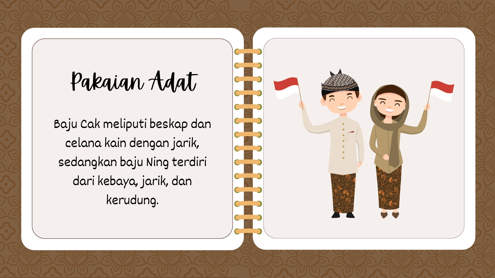
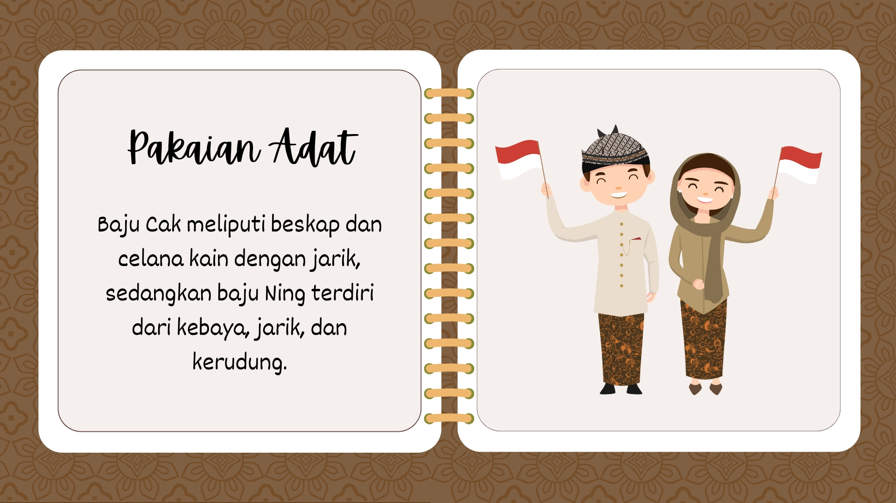

just call me lingling
selflove is selfcare
alive to share love
IDN | since 2004
 

Jatim Journey adalah sebuah website yang didedikasikan untuk memperkenalkan keindahan alam,
kekayaan budaya, dan destinasi wisata terbaik yang ada di Jawa Timur. Kami hadir untuk menginspirasi wisatawan lokal
agar lebih mengenal pesona daerah ini melalui panduan lengkap, cerita menarik, dan rekomendasi perjalanan yang tak terlupakan.
Jawa Timur adalah provinsi yang kaya akan keberagaman lanskap alam dan budaya. Mulai dari gunung yang megah seperti Gunung Bromo dan Semeru,
hingga pantai eksotis seperti Pantai Gili Labak dan Pantai Tiga Warna. Selain itu, budaya lokal yang berakar kuat seperti Reog Ponorogo,
upacara Grebeg Suro, dan tradisi masyarakat Tengger memberikan warna unik yang sulit ditemukan di tempat lain.
Jatim Journey hadir untuk menghubungkan keajaiban tersebut dengan para wisatawan. Melalui pendekatan yang informatif dan inspiratif,
kami ingin memastikan setiap orang dapat menikmati pengalaman terbaik di setiap sudut Jawa Timur.
Jatim Journey lahir dari sebuah visi sederhana tetapi penuh semangat yaitu memperkenalkan keindahan Jawa Timur kepada dunia.
Ide ini berawal dari keinginan mendalam pendiri kami untuk menciptakan sebuah website yang tidak hanya sekadar memberikan informasi tentang objek wisata,
tetapi juga menggali dan menyebarkan kisah-kisah menarik, keunikan budaya, dan pesona alam yang jarang tersentuh.
Sebagai seorang pecinta alam dan budaya lokal, pendiri Jatim Journey sering merasa bahwa banyak keindahan Jawa Timur yang belum dikenal
secara luas, baik oleh masyarakat Indonesia sendiri maupun dunia internasional. Dari pantai tersembunyi yang memukau hingga tradisi adat yang sarat
makna, semua itu layak mendapatkan perhatian yang lebih besar.
Jatim Journey lebih dari sekadar website, ini adalah gerakan untuk merayakan Jawa Timur sebagai salah satu daerah paling kaya akan
keajaiban alam dan budaya di Indonesia. Kami percaya bahwa setiap tempat memiliki cerita, dan melalui Jatim Journey, kami ingin menjadi
jembatan antara cerita-cerita tersebut dengan para pembaca, pelancong, atau siapa saja yang mencari inspirasi.
| Vision |
|---|
| Menjadi website terkemuka yang menginspirasi dan memudahkan wisatawan lokal maupun internasional untuk menjelajahi keindahan alam, kekayaan budaya, dan keunikan Jawa Timur, sekaligus mendorong pariwisata berkelanjutan yang memberdayakan masyarakat lokal. |
| Mission |
|